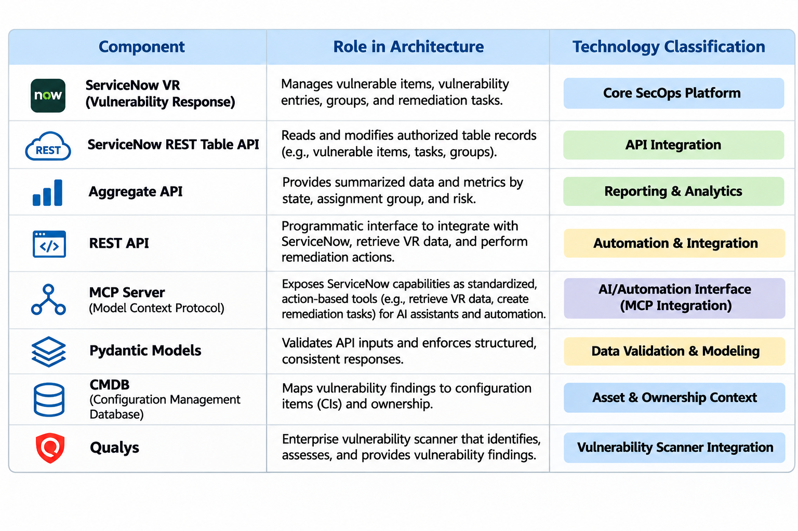
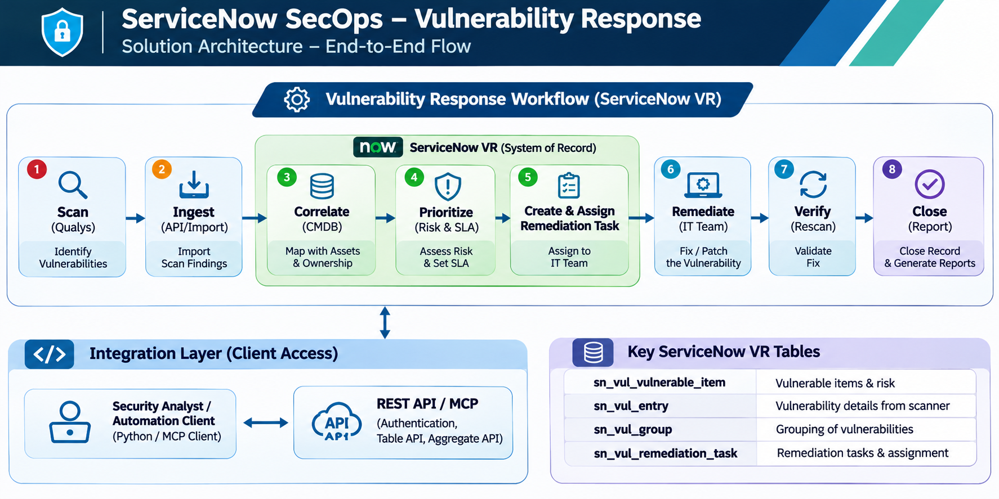
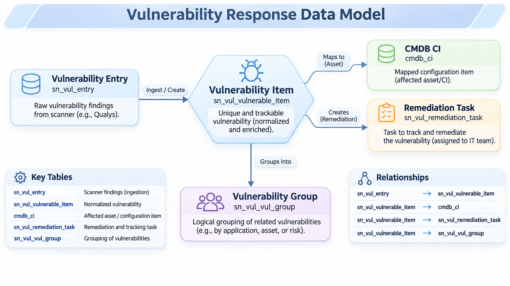
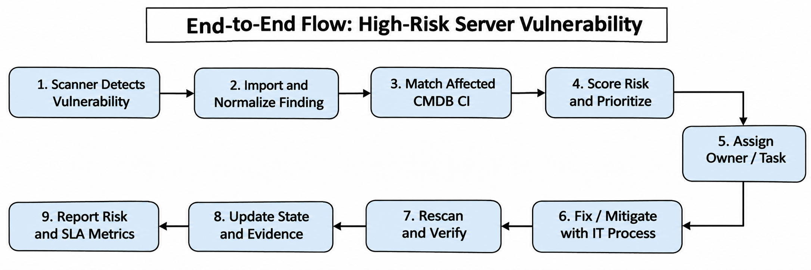
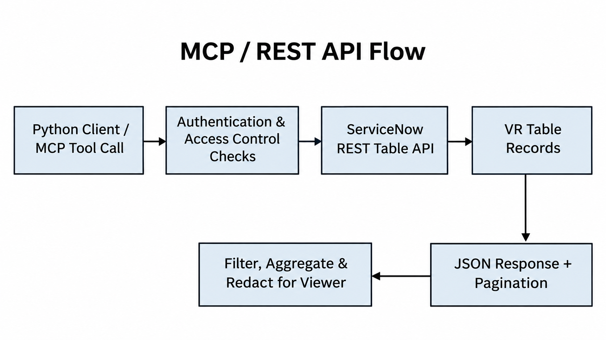

Enterprise Vulnerability Management & Remediation Automation
Technical architecture, vulnerability data model, process workflows, API integration, and security controls
Project Overview
UPS Security Operations implementation of ServiceNow Vulnerability Response (VR) supports the identification, assessment, prioritization, and remediation of security vulnerabilities across the enterprise IT infrastructure. The solution integrates with security scanning tools such as Rapid7 and Tenable to centralize vulnerability findings within ServiceNow. By leveraging CMDB data, risk-based prioritization, automated workflows, and remediation task management, the team can identify impacted assets, assign vulnerabilities to the appropriate support groups, and track remediation progress against defined SLAs. This capability enhances collaboration between security and infrastructure teams, reduces manual effort, and improves overall security visibility, compliance, and operational efficiency.
Business problem and objective
UPS Security Operations implementation, managing security vulnerabilities across servers, databases, applications, and other IT assets requires a centralized and structured approach. Key challenges include handling large volumes of vulnerability findings, identifying affected assets, determining remediation ownership, prioritizing critical risks, and ensuring timely resolution in accordance with established SLAs and security policies.
Key Objectives:
- Centralized Vulnerability Management: Consolidate vulnerability findings from security scanning tools such as Rapid7 and Tenable within ServiceNow Vulnerability Response (VR).
- Risk-Based Prioritization: Evaluate vulnerabilities based on severity, risk scores, asset criticality, and potential business impact.
- Automated Remediation Workflows: Streamline vulnerable-item assignment, remediation task creation, and status tracking to reduce manual intervention.
- CMDB Integration: Correlate vulnerability findings with Configuration Items (CIs) to identify impacted assets and determine appropriate remediation ownership.
- Monitoring and Reporting: Provide visibility into vulnerability status, remediation progress, SLA compliance, and overall security risk exposure.
Main technologies

Solution architecture

Vulnerability Response data model

The following are candidate tables identified by the repository. Availability and columns differ across ServiceNow versions/plugins: [VALIDATE]
| Table | Concept | Example Use |
|---|---|---|
| sn_vul_vulnerable_item | Vulnerability affecting a particular CI | Main analyst work queue |
| sn_vul_entry | Vulnerability definition | Link findings to vulnerability information |
| sn_vul_third_party_entry | External-scanner vulnerability entry | Relate vendor findings |
| sn_vul_nvd_entry | NVD/CVE entry | Enrich with published CVE information |
| sn_vul_detection | Detected finding | Trace detections to vulnerable items |
| sn_vul_remediation_task | Remediation work item | Track work to resolve exposure |
| sn_vul_vul_group | Group of related vulnerabilities | Organize bulk remediation |
| sn_vul_cmdb_ci | Potential CI mapping table | Check CI association; confirm table presence |
End-to-end : High-risk server vulnerability

Qualys identifies security vulnerabilities across enterprise servers and applications. The findings are integrated into ServiceNow Vulnerability Response (VR), where affected assets are mapped to CMDB Configuration Items (CIs). ServiceNow prioritizes vulnerabilities based on risk and severity, assigns remediation activities to the appropriate support teams, and tracks resolution through established IT processes.
Ingestion: Qualys vulnerability findings are imported into ServiceNow VR through configured integrations.
Normalization: ServiceNow processes vulnerability data and maps findings to the corresponding vulnerable items and CMDB assets.
Prioritization: Vulnerabilities are evaluated based on severity, risk scores, asset criticality, and business impact.
Retrieval: ServiceNow REST APIs provide authorized access to vulnerable-item records and remediation information.
Assignment: Remediation tasks are assigned to responsible infrastructure or application support teams based on CI ownership.
Remediation: IT teams implement security patches, configuration changes, or approved mitigation measures.
Verification: Qualys rescans affected assets to validate remediation, and ServiceNow updates the corresponding vulnerability records.
Reporting: ServiceNow dashboards and Aggregate APIs provide visibility into vulnerability status, risk levels, assignment groups, and SLA compliance.
Detailed execution flow
Step 1 — Discovery: a scanner reports a finding identified by CVE / plugin/asset. The scanner integration, rather than the Python wrapper, is responsible for importing the finding into ServiceNow.
Step 2 — Identification and normalization: the platform maps vulnerability metadata and affected host identifiers to vulnerability entries and vulnerable items. Duplicate handling and import transformations are instance-specific.
Step 3 — CMDB correlation: the finding is associated with a configuration item. Missing or incorrect CI matches can undermine ownership assignment and impact-based prioritization.
Step 4 — Risk and routing: ServiceNow VR prioritizes the item using configured risk inputs; assignment rules identify the responsible remediation group. Never assume an identical formula or choice value across instances.
Step 5 — API visibility: the repository client reads authorized vulnerable items using the ServiceNow Table API; a reporting client can filter, paginate and group the returned dataset.
Step 6 — Remediation and verification: the owning team applies a change or mitigation through approved IT processes; a subsequent scan or validation provides evidence before closure.
Step 7 — Operational reporting: report outstanding high-risk findings, age, ownership and due-date/SLA exposure with definitions agreed by the security organization.
MCP / REST API

Client connects to ServiceNow Vulnerability Response (VR) through REST APIs to retrieve vulnerability information securely.
Step 1 – MCP Tool Call
MCP client sends a request to ServiceNow to retrieve vulnerability information, such as open vulnerabilities, risk scores, and assigned support groups.
Step 2 – Authentication & Access Control
ServiceNow verifies the integration credentials and checks whether the client has permission to access the requested vulnerability records.
Step 3 – ServiceNow REST Table API
The REST Table API processes the request and retrieves the requested vulnerability information from ServiceNow.
Step 4 – VR Table Records
ServiceNow accesses the relevant Vulnerability Response tables, such as sn_vul_vulnerable_item, to retrieve vulnerability details, affected assets, risk scores, and assignment information.
Step 5 – JSON Response & Pagination
ServiceNow returns the requested information in JSON format. Pagination allows the client to retrieve large numbers of records in smaller batches.
Step 6 – Filter, Aggregate & Redact
The client processes the response to filter vulnerabilities by severity, risk, or assignment group. It can also calculate summary counts and hide sensitive information before displaying the results
Example:
# Local MCP server
servicenow-mcp
# Local-only streamable HTTP transport for development
servicenow-mcp --transport streamable-http --host 127.0.0.1 --port 8000
VR query recipe reproduced conceptually from the project SecOps workflow. In action-routed/condensed mode, operation names and payload placement may differ from the verbose tool examples; check MCP_TOOL_MODE and the live tool schema.
{
"table": "sn_vul_vulnerable_item",
"sysparm_query": "active=true^ORDERBYDESCrisk_score",
"sysparm_fields": "number,vulnerability,cmdb_ci,risk_score,state,assignment_group",
"sysparm_limit": 25,
"sysparm_display_value": "true"
}Discover-first validation checklist
- Verify that the Vulnerability Response modules are available and the required user roles and permissions are configured.
- Table Verification: Query sys_db_object to confirm that the required sn_vul_ tables exist.
- Field Validation: Verify that risk_score, cmdb_ci, and assignment group are available in sn_vul_vulnerable_item.
- State Validation: Review sys_choice to confirm the configured vulnerability state values and labels.
- Record Retrieval: Retrieve a sample record from sn_vul_vulnerable_item with display values enabled.
- Execute a read-only GET request with a small record limit before applying additional filters.
- Compare API response records and values with the corresponding ServiceNow UI list view.
- Verify ACL enforcement, audit logging, and secure handling of credentials and sensitive information.
- Confirm that vulnerability data is accurate, accessible to authorized users, and ready for remediation tracking and reporting.
Security, privacy, and deployment controls
- Use a dedicated integration identity with least-privilege table/record ACLs, not broad admin credentials.
- Prefer approved token delegation/OAuth if the deployment requires it; rotate secrets and never commit them.
- Keep TLS certificate verification enabled. Use a trusted CA bundle rather than disabling validation.
- For network-exposed MCP deployments, require authentication, TLS, host restrictions, and appropriately trusted ingress.
- Begin with bounded read-only calls. Live record changes need separate authorization and rollback planning.
- Keep telemetry metadata-only unless approved. Do not log vulnerability details, secrets, prompts, or raw payloads by default.
- Use timeouts, bounded pagination, retry/backoff, and monitoring appropriate to your environment (engineering recommendations).